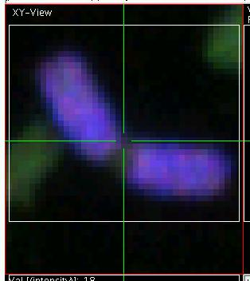
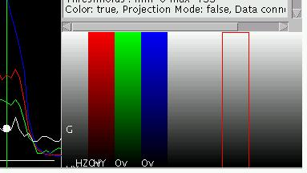
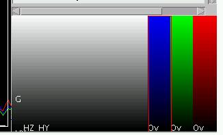
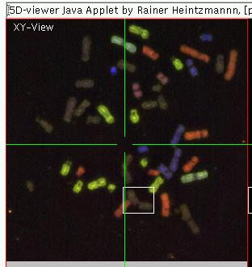
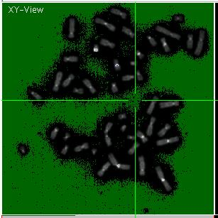
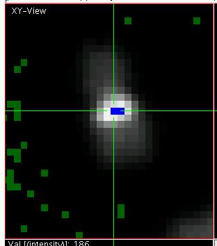
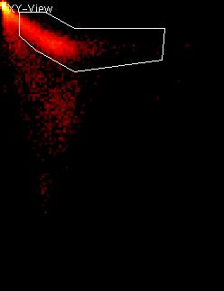
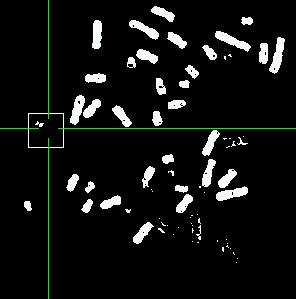
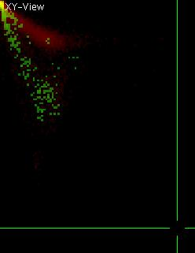

View5D Multicolor Tutorial
Image Data is 7-color FISH (m-FISH) of a chromosomal metaphase
spread. The data was acquired by Christine Fauth in the group of
Michael Speicher, LMU Muenchen.
please wait for the viewer and the image data to be loaded (THIS
MIGHT TAKE SOME TIME)! The tutorial continues down below the applet.
Navigation
Above the applet version of View5D should load and after some time a
multicolored metaphase spread should be visible in the upper left
quarter of the viewer. The lower left
quadrant shows intensity traces of the multiple colors taken at the
line indicated as a horizontal green line though the data displayed in upper left quadrant. Changing the
position at which this line scan is performed is straight forward: left-click with the mouse at any
point in the image and the position of the line should update
appropriately. Simultaneously the position of the vertical line will be
updated changing the position of the line scan displayed in the upper right panel. Note how the
text displayed at the right hand
side also updates. This text refers to the active pixel, which sits in
the focus of the green cross-hair that defines the slicing positions as
explained above. The slicing positions can be continuously changed by dragging with the left mouse button pressed down. The
cross-hair can also be adjusted pixel by pixel using the arrow keys on
the keyboard.
Zoom/ Demagnify
Select a chromosome or your choice and zoom in by pressing "A" (shift-"a") on the keyboard. The display will
zoom in, keeping the position of the cross-hair in place. By pressing "a" on the keyboard, the zoom
can be decreased. Note that the keyboard commands are case sensitive.
The result depends on whether shift has been pressed. All commands can
be accessed via keyboard or via the menu. Zooming is thus also possible
by selecting Display > Zoom_in [A]
from the menu (right-click into the upper left data display panel). The
keyboard command is indicated in square brackets in the appropriate
menu.
Zoom in onto a chromosome using "A".
Now you can adjust the field of view by dragging the image with the middle
mouse button (or pressing the space-bar before a left-button mouse
click).
Finally press "i" on the
keyboard. This initialized the display window and zooms to back to the
initial standard view.
Select a region of interest (ROI)
by pressing shift on the keyboard and
dragging with the left mouse button in the upper left data display
window. This generates a ROI of rectangular shape. Once the ROI is
selected the display can be zoomed to fit the ROI by pressing "Z" (remember to press shift!). The
result should look approximately as shown on the right:
Note that selecting the ROI also changed some values in the text
display which deal with statistics of ROIs. Finally initialize the
viewer again ("i").
Multicolor mode
In the very lower right panel a plot with the title "Intensity
(Elements), normalized" indicates the intensity information in the
active pixel (in the middle of the cross-hair) for all the available
color channels (here 7). Note how this display updates, when the
cross-hair is dragged. These color channels are denoted as "Elements".
There is always one element active (indicated by the white dot visible
in this plot). Instead of clicking the active element can also be
changed by using "e" and "E". Note how the textual display
above changes and the dot travels right or left to the next or previous
element respectively. A similar effect can be achieved using the left
and right arrow keys, when the mouse is over the element display (lower
right).
By pressing "q" the display
mode can be changed. If pressed in the lower right (element panel), the
display toggles though a multitude of modes until it arrives back to
the original mode. Toggle the display until you see something similar
to image displayed on the right hand side of this section.
Note the red border around on of the columns. This red border indicates
the active element. The individual columns indicate the current
assignment of color maps to the individual image channels. Pressing "C" (use shift!) toggles between
multicolor mode and single color display mode. Note the change in the
top left image data display. Toggle though the different individual
elements ("e", "E") when in single color display mode (reached via "C")
and observe how some chromosomes show up only in some of the 7 color
channels.
The assignment of a color map to the active element can be changed by
using "c" (no shift here!).
However, since often red, green and blue are the color maps of choice,
they have been assigned to the keys "r",
"g" and "b". Activate the last element and
assign the color red to it (using "r"),
assign green ("g") to the
second to last element and blue to the third to last element ("b"). The element display (choose
the correct mode via "q" in the element display) should look like shown
on the right. Note that the original red, green and blue channels were
automatically deleted and disappeared also from the multicolor image
data display, which now should look like shown
on the right. When browsing through the individual color maps (which
can
also be directly accessed by right clicking in the element display and
selecting the appropriate color map from the menu "ColorMaps") one has
to assure that the elements of choice are selected for display in the
multicolor overlay. The active element can be toggle in and out of the
multicolor overlay (reached via "C")
using "v". This is done
automatically when "r", "g" and "b" are used or their counterparts "R", "G" and "B" which remove the appropriate
channel from the overlay display.
Contrast and Brightness adjustments
Activate the first element, toggle the display to single color mode
(using "C") and set it to a
grey scale color map (e.g. using "c").
Press "1" (numeric one) two
times and
press "4" four times. Observe
slight changes in image brightness and contrast. Then press "o". The display should now look
like shown on the right.
The green pixels indicate image values which are below the minimally
displayed color map and blue pixels (see zoomed display on the left)
indicate pixels above the maximally displayed values. "o" toggles in and out of this
under-/overflow indicator mode and "1",
"2" adjust the minimum
displayed value (see also the text display). The upper displayed level
is adjusted by "3" and "4". The color map is stretched
linearly between this minimum and maximum, which thus enables the user
to adjust brightness and contrast.
2D Histograms
It is possible to generate up to 3-dimensional histograms from the
whole data set or from specific ROIs. Unselect the ROI, by double-left
mouse-click. Now press "h" on the keyboard. You should see a
2-dimensional scatter plot similar to the one depicted on the right.
This scatter plot is a two-dimensional histogram of pixel intensities.
In this case each pixel in the original image appears a s dot in the
scatter plot, where two of the colors of the pixels define the X and Y
coordinates of it in the scatter plot. In many respects this is very
similar to the plots obtained in flow cytometry (FACS scans). In this
case the first and second color channel where selected for X- and
Y-coordinate respectively (by default).
Clouds of pixels in this 2D histogram stem from pixels which have
similar values in both of these channels. Streaks pointing towards the
zero coordinate, like the one on the top right stem from pixels, which
have similar ratio of colors. For this reason these scatter plots are
very useful for the visual analysis
of colocalization.
Now select a region of interest of arbitrary shape, similar to the one
shown on the right. To do this toggle via "S" to the poly-ROI mode and
shift-click to start the ROI. With every further click the ROI is
extended with a line. To finish and close the ROI use a double-click.
Identifying the
Contributing Pixels
It is now useful to find out, which of the pixels in the original image
contributed to the region in the 2D histogram that is selected as a
ROI. To do so, press "h" in the histogram. This will generate an
additional element in the original viewer. Have a look at this element
(you can toggle to it via "e" or "E" in the single color mode that is
accessible via "C"). The newly generated element should look like shown
on the left (click to enlarge). This image is a binary image (values
only 0 and 1) since it only describes which the contributing pixels
were. Note that a few chromosomes do not appear here, since they had a
different ratio of colors. Select such a chromosome (e.g. like shown on
the left). Then press "h" in the viewer with the chromosomes again and
switch to the histogram window that is still open. You should see
something similar to what is shown on the right. Note the extra pixels
in green that have appeared. Only very few of them fall into the ROI
that was selected in the histogram, as it could be expected. It can be
very useful to switch back an forth between histogram and image
representation and select ROIs to learn about the properties of the
image (e.g. in colocalization studies and for analyzing m-FISH data).
The elements (colors) which should be tagged for histogram X- or Y- (or
even Z-) axis can be selected by typing "x", "y" (or "z") when the
appropriate element is active.
{kind=link}